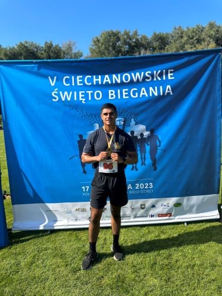
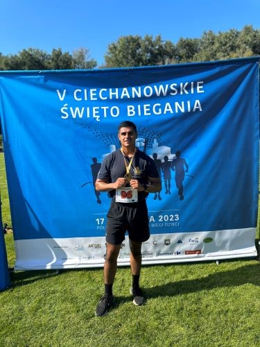

Welcome to my website! My name is Edgar Higareda, and I've spent over a decade of my life dedicated to the pursuit of physical fitness, self-improvement, and service to my country. My journey has taken me through 11 years of dedicated service in the Army, where I honed my skills and expertise, and continue to find ways to improve physically and mentally.
Now, I'm on a mission to share my knowledge and help others transform into hybrid athletes, capable of excelling in various physical disciplines.
This website is the embodiment of my mission and my passion. It's designed to be a hub of knowledge and guidance, tailored to those who are interested in not just one specific sport or fitness regimen but in becoming hybrid athletes.
As a hybrid athlete, you'll have the versatility to excel in various activities, whether it's strength training, endurance sports, martial arts, or any combination of these disciplines.
I believe in a holistic approach to fitness, focusing on the mind-body connection, nutrition, and balanced training.
Whether you're an aspiring athlete, a fitness enthusiast, or someone who simply wants to lead a healthier lifestyle, my goal is to provide you with the resources, knowledge, and support needed to become a well-rounded and capable individual.
Join me on this exciting journey toward hybrid athleticism, where we'll break down barriers, overcome challenges, and unlock your full physical potential.
Together, we'll redefine what it means to be fit, healthy, and capable.
